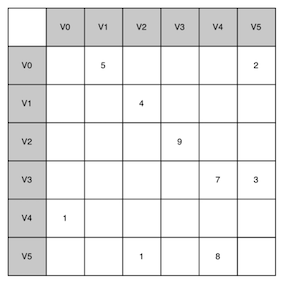
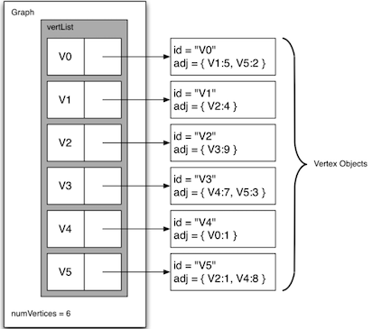
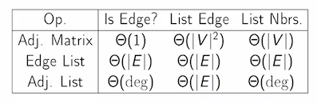
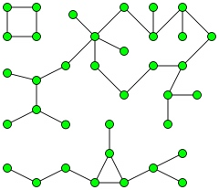

Topic: Graph¶
Definition: A graph can be represented by G where G=(V,E). For the graph G, V is a set of vertices and E is a set of edges. Each edge is a tuple (v,w) where w, v \in V.
Vocabulary and Definitions¶
vertex : also anode , is a fundamental part of a graph. It can have a namekey . A vertex may also have additional information calledpayload .Edge : also anarc , connects two vertices, and may be one-way(directed graph) or two-way(undirected graph).- Weight: Edges may be weighted to show that there is a cost (
weight )to go from one vertex to another. E.g. the distance between the two cities. path : a sequence of vertices that are connected by edges. Formally we could define a path as w_1, w_2,...,w_n such that (w_i,w_{i+1}) \in E for all 1 \le i \le n-1. The weighted path length is the sum of the weights of the edges in the path.cycle : a path in a directed graph, which starts and ends at the same vertex. A graph with no cycles is called an acyclic graph. A directed graph with no cycles is called a directed acyclic graph or a DAG.
Representation¶
Adjacency Matrix¶
- Each of the rows and columns represent a vertex in the graph.
- The value that is stored in the cell at the intersection of row v and column w indicates if there is an edge from vertex v to vertex w.
- simple, but inefficient if the graph is too large and the matrix is sparse.
- Space Complexity: O(|V|^2), where |V| is the number of vertices.

Adjacency List¶
A more space-efficient way to implement a sparsely connected graph is to use an adjacency list. We keep a master list of all the vertices in the

Edge List¶
A list of edges. Edge lists are simple, but if we want to find whether the graph contains a particular edge, we have to search through the edge list. Space Complexity is O(|E|), where |E| is the number of edges.
Summary¶

API¶
The graph abstract data type (ADT) is defined as follows:
Graph() : Creates a new, empty graph.addVertex(vert) : Adds an instance ofVertex to the graph.addEdge(fromVert, toVert) : Adds a new, directed edge to the graph that connects two vertices.addEdge(fromVert, toVert, weight) : Adds a new, weighted, directed edge to the graph that connects two vertices.getVertex(vertKey) : Finds the vertex in the graph named vertKey.getVertices() returns the list of all vertices in the graph.in : ReturnsTrue for a statement of the form vertex in graph, if the given vertex is in the graph,False otherwise.
Implementation¶
We will create two classes,
Each
class Vertex: def __init__(self, key): self.id = key self.connectedTo = {} def addNeighbor(self, nbr, weight=0): self.connectedTo[nbr] = weight def __str__(self): return str(self.id) + ' connectedTo: ' + str([x.id for x in self.connectedTo]) def getConnections(self): return self.connectedTo.keys() def getId(self): return self.id def getWeight(self, nbr): return self.connectedTo[nbr]
The
class Graph: def __init__(self): self.vertList = {} self.numVertices = 0 def addVertex(self, key): self.numVertices = self.numVertices + 1 newVertex = Vertex(key) self.vertList[key] = newVertex return newVertex def getVertex(self, n): if n in self.vertList: return self.vertList[n] else: return None def __contains__(self, vertex): return vertex in self.vertList def addEdge(self, fromVert, toVert, cost=0): if fromVert not in self.vertList: nv = self.addVertex(fromVert) if toVert not in self.vertList: nv = self.addVertex(toVert) self.vertList[toVert].addNeighbor(self.vertList[toVert], cost) def getVertices(self): return self.vertList.keys() def __iter__(self): return iter(self.vertList.values())
Search¶
深度优先搜索(Depth First Search, DFS)和广度优先搜索(Breath First Search, BFS)是常用的图的搜索算法。
DFS和BFS主要差别是搜索的优先级不同，一个广度优先，一个深度优先。
BFS Implementation¶
Breadth-First Search (BFS)
- explored nodes in "layers"
- can compute shortest paths (FIFO)
- can compute connected components of an undirected graph
- O(E+V) time using a queue
BFS (graph G, start vertex s) -- mark s as explored -- let Q = queue, initialized with s -- while Q is not empty: -- remove the first node of Q, call it v -- for each edge (v, w): -- if w unexplored -- mark w as explored -- add w to Q(at the end)
Connected Components via BFS¶
A connected component of an undirected graph is a subgraph in which any two vertices are connected to each other by paths, and which is connected to no additional vertices in the supergraph. [wiki]

To compute all components for undirected graph:
-- initialize all nodes as unexplored [assume labelled 1 to n] -- for i = 1 to n -- if i not yet explored //discovers precisely i’s connected component -- BFS(G, i)
def bfs(graph, start): visited, queue = set(), [start] while queue: vertex = queue.pop(0) if vertex not in visited: visited.add(vertex) queue.extend(graph[vertex] - visited) return visited
Running time is O(|E| + |V|).
DFS Implementation¶
Depth-First Search
- explore aggressively like a maze, backtrack only necessary
- compute topological ordering of a directed acyclic graph
- compute connected components in directed graphs
- O(E+V) time using a stack (LIFO) or via recursion
Recursive Version
DFS(graph G, start vertex s) -- mark s as explored -- for every edge (s, v): -- if v unexplored -- DFS(G, v)
def dfs(graph, start, visited=None): if visited is None: visited = set() visited.add(start) for next in graph[start] - visited: dfs(graph, next, visited) return visited
Iterative Version
DFS(graph G, start vertex s): -- let S be a stack, and initialized with s -- while S is not empty -- u = S.pop() -- for each edge (u, v) -- if v is not yet explored: -- label v as explored -- S.push(v)
Topological Sort¶
A topological sort of a directed graph is a linear ordering of its vertices such that for every directed edge uv from vertex u to vertex v, u comes before v in the ordering. [wiki]
Note : G has directed cycle => no topological ordering
-- mark all vertexes unexplored -- L ← Empty stack that will contain the sorted nodes -- for each vertex -- if v not yet explored -- DFS(G, v) -- DFS(G, start vertex s) -- for every edge (s, v) -- if v not yet explored -- mark v explored -- DFS(G, v) -- add s to L
Reference¶
- Problems Solving with Algorithms and Data Structures, Chapter 7
- Depth-First Search and Breadth-First Search in Python